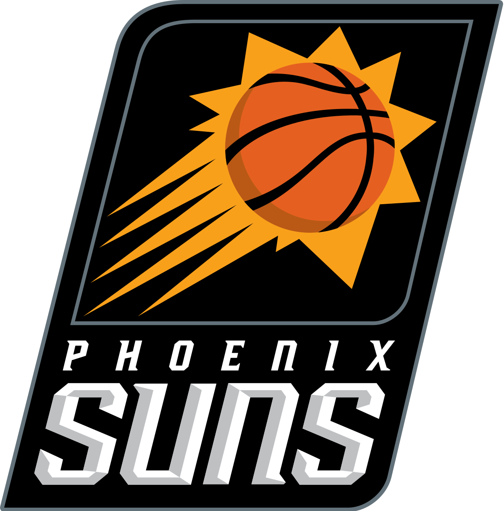

Phoenix Suns
The Phoenix Suns had the top record during the regular season. They are looking to return to the NBA finals for the second year in a row. Phoenix is the safe pick to win the West if they are healthy. They, like some of the teams in the East, are a good all-around team with great depth off the bench. Unfortunately, their leading scorer, Devin Booker, is injured. A first round exit would be devastating to the team's future, especially since their starting point guard, Chris Paul, is injury prone and 36 years old. If the team can stay healthy, they could possibly win the West again.